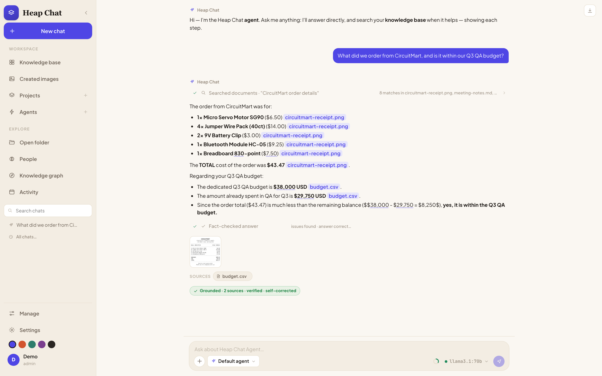
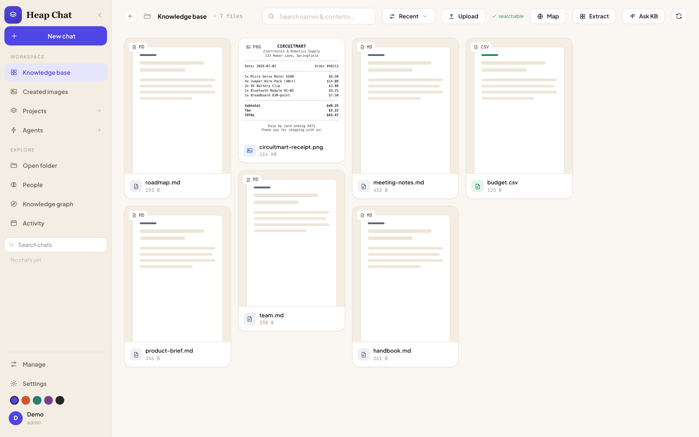
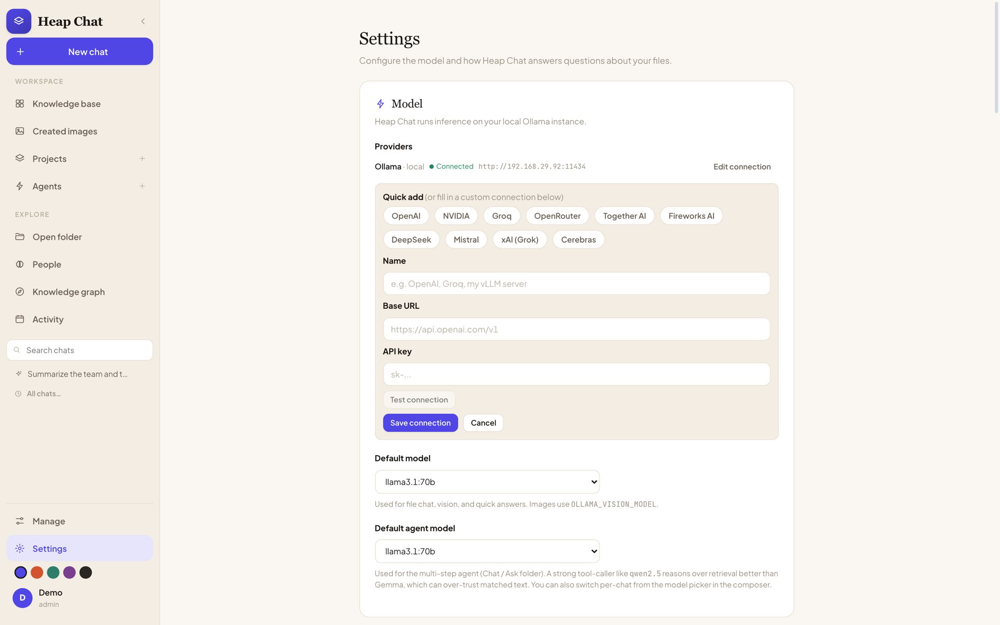

Browse your files like a board.
Chat with an AI that actually knows what's in them.
Heap Chat turns your folders into a searchable, chattable knowledge base — powered entirely by a local Ollama model. No cloud dependency, no API keys required, no telemetry. The AI lives with your files permanently, instead of visiting them one upload at a time.

Not just search. Not just a chat wrapper.
Six things Heap Chat treats as first-class, that most AI file tools bolt on as an afterthought — or skip entirely.
Fully local, fully private
No data leaves your machine except to your own Ollama server — and only to the web/MCP endpoints you explicitly enable. Nothing phones home, ever.
An agent, not just search
A multi-step, tool-using agent reasons over your files, cites its sources, and self-verifies grounded answers before you ever see them.
Everything, not just documents
Photos, videos, audio, PDFs, Word docs, code, CSVs — with face recognition, a photo map, and a knowledge graph tying it all together.
Gets smarter over time
A learning loop gives it persistent memory, a profile of how you like to be helped, and skills it teaches itself from repeated tasks.
Multi-user, real access control
Admin/member roles with per-folder grants enforced server-side on every request — not just hidden behind a UI toggle.
Extensible by design
Connect to any MCP server, or expose Heap Chat's own knowledge base as an MCP server to Claude Desktop, Claude Code, or any client.
The AI lives with your files, permanently
Heap Chat isn't trying to be a smaller ChatGPT. It's built around a different premise — instead of visiting your files one upload at a time, the AI stays with them.
| Capability | ChatGPT / Claude | Open WebUI | Heap Chat |
|---|---|---|---|
| Runs fully offline / local-only | No | Yes | Yes |
| Memory that reflects, decays, and learns a profile of you | Shallow flat facts | No | Yes — typed memory, episodic reflection, auto-built profile |
| Knowledge graph over your own files | No | No | Yes — people, places, tags, documents fused, LLM-free |
| Photo-native (face recognition, geotag map, visual dedup) | No | No | Yes |
| Local image generation tied into chat | Hosted API only | No | Yes — via Draw Things, fully offline |
| Multi-user, server-enforced per-folder access control | N/A (single-user) | Yes | Yes |
| Background agent jobs on a schedule | No | No | Yes — digests to feed / note / notification |
| MCP client and server | Varies | Client only | Both |
| Optional cloud model as a second provider | N/A | Yes (many) | Yes — any OpenAI-compatible API, admin-configured |
Where Heap Chat is still catching up: it doesn't yet have voice conversation, a split-pane editable canvas, or a mobile-first layout — real gaps against the hosted apps, tracked openly rather than glossed over. What it trades those for is an AI that actually accumulates context about your files and you, permanently, without any of it leaving your machine.
What using it actually looks like
Real screens from the app — no mockups.
Every file, laid out like a board
Open a folder or a single file and Heap Chat turns it into a real masonry gallery — thumbnails, video frames, audio waveforms, document previews. Filter by type, sort, and search by name and content, not just filenames.
- Duplicate finder — clusters photos by perceptual hash, exact vs. similar
- Multi-select batch actions — Add to KB, tag, auto-tag, smart-rename
- Command palette (⌘K) — jump to any file or action instantly

Every answer, shown its work — then verified
Watch the agent search your files live, cite exactly which documents (and photos) it used, and run a self-verification pass before the answer ever reaches you. Here it reads a receipt image and a budget spreadsheet together to answer one question.
- Multimodal RAG — a photo of a receipt gets cited line-by-line, same as any document
- Grounded · N sources · verified badge on every checkable claim
- Deep work mode — a planner → researcher → drafter → critic roster for hard requests
Bring your own model — local, or ten cloud ones
Every provider, including the built-in Ollama connection, gets the exact same flow: a base URL, an API key if it needs one, a live Test connection that pulls its real model list, and Save connection. No restarts.
- One-click presets for OpenAI, Groq, OpenRouter, NVIDIA, Together, Fireworks, DeepSeek, Mistral, xAI, Cerebras
- Add as many connections as you want, each with its own model allowlist
- Full agent + tool-calling support on every provider, not just plain chat

Everything a knowledge workspace needs
Every category below ships today — nothing here is a roadmap promise.
Browse & organize
A real masonry gallery over your actual filesystem, not an upload box.
- Search by name and content
- Duplicate finder (exact + visually similar)
- Command palette (⌘K)
Chat & agent
A native tool-calling agent that loops until it can answer, over your whole KB, a folder, a file, or a Project.
- Live chain-of-steps before the answer
- Grounding badge + self-verification pass
- Deep-work multi-agent roster
Knowledge & memory
RAG over any folder plus a learning loop that compounds the longer you use it.
- Long-term memory, auto-captured
- Skills, profile, reflection, scheduler
- Multimodal RAG — photos are searchable too
Photos & people
On-device face detection, a geotagged photo map, and true visual similarity.
- Name a face cluster once, it sticks
- EXIF GPS plotted on an interactive map
- Perceptual-hash related-image finder
Knowledge graph
A fully local, LLM-free entity graph built from people, places, tags, and documents.
- Browse individual entities and links
- Force-directed overview of everything
- Zero LLM calls to build it
Projects & custom agents
Named workspaces with their own instructions and KB, plus fully custom agents.
- Per-agent system prompt & tool toggles
- Export/import any agent or chat as JSON
- Grouped chat history per project
Local image generation
Create and edit images entirely offline via a local Draw Things server.
- /image-create and /image-edit
- "Edit with AI" on any gallery photo
- No cloud image API involved
Integrations
MCP client and server, keyless web search, and automatic link reading.
- Any MCP server by URL, two meta-tools total
- Exposes your KB as an MCP server too
- Paste a link, it gets read automatically
Multi-tenant & security
Real accounts from the first launch, not a bolted-on afterthought.
- Server-enforced per-folder grants
- scrypt-hashed passwords, HttpOnly sessions
- Phone/PWA access, gated by the same login
Built on real agent-research patterns, not just plumbing
Heap Chat's agent behavior is assembled from well-established techniques from the LLM-agent literature — implemented concretely, running locally, not just name-dropped.
Retrieval-augmented generation (RAG)
Answers are grounded in your own files instead of parametric memory alone — the model retrieves relevant chunks before it answers.
Here: a vector index per folder/KB, incrementally updated on disk, with clickable source citations on every grounded answer.
ReAct-style reason–act–observe loop
Rather than a single forward pass, the model interleaves reasoning with tool calls and observes the results before deciding what to do next.
Here: native Ollama/OpenAI tool-calling looped until the agent can answer, with every step streamed live to the UI.
Self-verification / chain-of-verification
A model that checks its own draft against evidence catches unsupported claims a single pass would let through.
Here: a dedicated verification pass double-checks specific claims against retrieved evidence, and underlines numbers back to their source row.
Reflective, generative-agent-style memory
Memory that just accumulates flat facts gets noisy fast — reflection periodically distills raw experience into durable, higher-level understanding.
Here: typed long-term memory with strict dedup/merge, an opt-in reflection pass over finished chats, and an auto-rebuilt profile of how you like to be helped.
Skill acquisition from experience
An agent that solves the same kind of task the same slow way every time isn't learning — procedural memory turns a solved task into a reusable shortcut.
Here: the agent saves step-by-step "skills" after solving a repeatable task, recalled by similarity when a similar task comes up again.
Role-specialized multi-agent collaboration
Splitting a hard task across specialized roles — plan, research, draft, critique — tends to outperform one generalist model looping alone.
Here: "Deep work" mode runs a planner → researcher → drafter → critic roster on complex requests instead of a single agent.
Deterministic entity-graph construction
Not every part of an AI product needs to be a model call — a classic, deterministic entity-fusion graph is faster, cheaper, and can't hallucinate a connection.
Here: people, photo locations, tags, and document entities are fused into a browsable graph with zero LLM calls involved.
Perceptual hashing for near-duplicate detection
Filename or byte-hash matching misses crops, edits, and re-compressions — perceptual hashing compares what images actually look like.
Here: photo duplicate/related-image detection uses perceptual hashing, so bursts, crops, and edits get found, not just exact copies.
Model Context Protocol, both directions
MCP standardizes how models reach external tools and context — most tools only ever consume it.
Here: Heap Chat is both an MCP client (any server, two meta-tools total) and an MCP server exposing your KB to Claude Desktop, Claude Code, or any client.
Adaptive context-window management
Fixed context budgets either waste headroom or silently truncate — sizing the window to the actual conversation avoids both failure modes.
Here: context windows are sized to the live prompt automatically, with a visible context meter and graceful oldest-turn trimming if a request still won't fit.
A native app, not just a browser tab
Heap Chat ships as a real Electron app for macOS and Windows — with a menu-bar Quick Ask popover for a fast, global on-ramp into your knowledge base, alongside the full self-hosted web server for LAN/phone access.
Running locally in under five minutes
You'll need Ollama installed locally with a chat model and an embedding model pulled. Everything else — indexing, embeddings, vision, chat — runs on your machine.